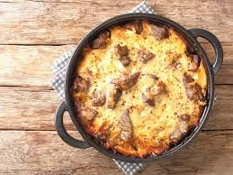

Description
Tave Kosi is a classic Albanian dish made with lamb or chicken, baked in a creamy yogurt sauce, and seasoned with spices. The name "Tave Kosi" translates to "baked yogurt dish," highlighting the key ingredient—yogurt—used to create a rich, tangy base for the dish. The meat is usually first browned in a pan, then placed in a baking dish with a mixture of yogurt, eggs, and a bit of flour to thicken the sauce. The dish is then baked until golden and bubbling.
The combination of tender meat and creamy yogurt gives Tave Kosi its signature comforting texture and flavor. It’s often served with rice or bread, making it a hearty and satisfying meal. This dish is a beloved part of Albanian cuisine, typically enjoyed during family gatherings or special occasions. The creamy yogurt sauce adds a unique balance to the savory meat, making it a true Albanian favorite.
Ingredients
- Lamb or chicken (cut into pieces)
- Yogurt (full-fat, preferably)
- Eggs (for binding the sauce)
- Flour (to thicken the sauce)
- Olive oil (for browning the meat)
- Garlic (minced)
- Onions (chopped)
- Salt
- Black pepper
- Paprika (optional, for seasoning)
- Water or chicken broth (to add to the sauce)
Steps
- Prepare the Meat:
- Cut the lamb or chicken into pieces.
- Brown the meat in a pan with some olive oil over medium heat until it’s golden on all sides. Set it aside.
- Prepare the Yogurt Sauce:
- In a bowl, whisk together yogurt, eggs, flour, salt, black pepper, and paprika (optional) until smooth.
- Add a little water or chicken broth to achieve a creamy consistency.
- Cook the Onions and Garlic:
- In the same pan used for the meat, sauté the chopped onions and minced garlic until soft and fragrant.
- Assemble the Dish:
- Preheat the oven to 180°C (350°F).
- In a baking dish, place the browned meat and sautéed onions and garlic.
- Pour the yogurt mixture over the meat, ensuring everything is well covered.
- Bake the Dish:
- Cover the baking dish with foil and bake in the preheated oven for about 45 minutes to 1 hour, or until the meat is tender and the yogurt sauce is set and golden.
- Serve:
- Once baked, let the dish cool slightly before serving. It is often enjoyed with rice or bread.